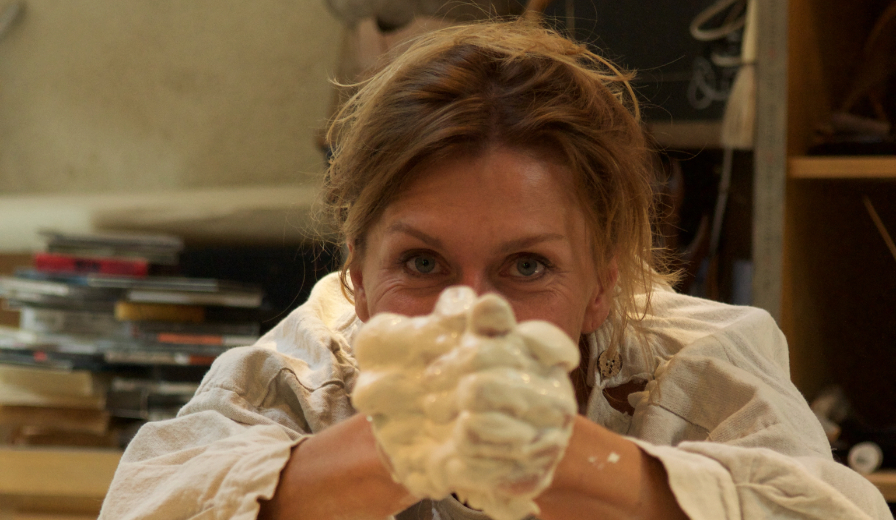

EN
|
FR
GALLERY
ABOUT
CONTACT

GARY ON INTERNET
Cote Magazine
Trophee du Carre des Jardiniers
Paysalia
Garden Fab
Domaine de Chaumont-sur-Loire
Jardins, Jardin 2014
Membre du jury du carre des jardiniers
Gary sculpteur carre des jardiniers paysalia
COLLABORATIONS
Audionaute
Horticulture & Jardins
Michel Redolfi
Jeanmus
Paysalia
Jardins Jardin
Conceptuelles
Cezae
Franck Prost
GL Events